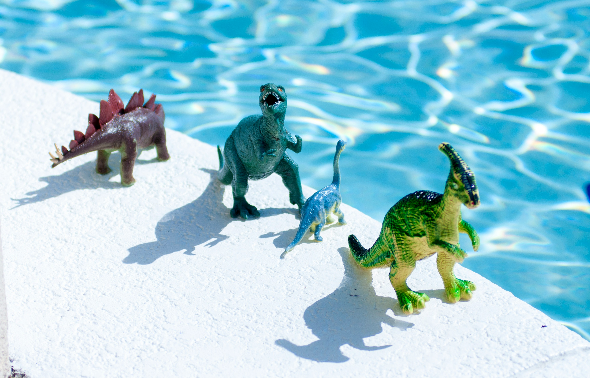

Tilikum, orka schwytana w młodym wieku, spędziła większość swojego życia w niewoli, zamknięta w małym basenie w parku wodnym. Brak przestrzeni, stres związany z izolacją od innych orków oraz intensywne treningi wpłynęły na jej zdrowie psychiczne. W tych warunkach Tilikum wielokrotnie zachowywała się agresywnie, co doprowadziło do tragicznych incydentów. Przypadki ataków na trenerów były postrzegane przez wielu jako wyraz frustracji i reakcji na brutalne traktowanie oraz przebywanie w nienaturalnym środowisku. Tilikum stała się symbolem debaty nad etyką trzymania dzikich zwierząt w niewoli.
Basen był za mały
Wymiar basenu orki wynosi zaledwie
9,5m długości x 7m szerokości na 3,5m głębokości.
To stanowczo za mało na tak duże zwierzę.
